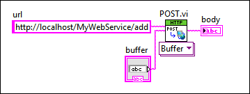

Parent Topic: Sending HTTP Requests to Web Services
You can use the POST HTTP method to send data to an HTTP method VI. You can use a common HTML form, the HTTP Client VIs, or another compatible client to gather and submit POST data. Use the POST method instead of a URL mapping when sending a large quantity of data to an HTTP method VI.
|
Note��For more information about concepts in this topic, refer to the Web services introduction and tutorial. LabVIEW Web services are available only in the LabVIEW Full Development System and the LabVIEW Professional Development System. |
The following example shows how to use an HTML form to submit POST data to a Web service. The Web service name is MyWebService. The URL mapping is /add and is configured to accept POST data on the HTTP Method VI Settings page of the Web Service Properties dialog box.
The following HTML code creates two value fields and a submit button:
<form name="send" action="/MyWebService/add" method="POST">
<input type="text" name="x">
<input type="text" name="y">
<input type="submit" value="Submit">
</form>
If you assign the values 2 and 3 to the respective inputs labeled x and y and click the submit button, the HTML form submits the following POST data:
POST /MyWebService/add/
x=2&y=3
You can use the POST VI and the POSTMultipart VI to create a web client in LabVIEW that sends POST requests to a deployed Web service. The following figure shows code that uses the POST VI to perform a similar HTTP request as the HTML form in the previous example.
